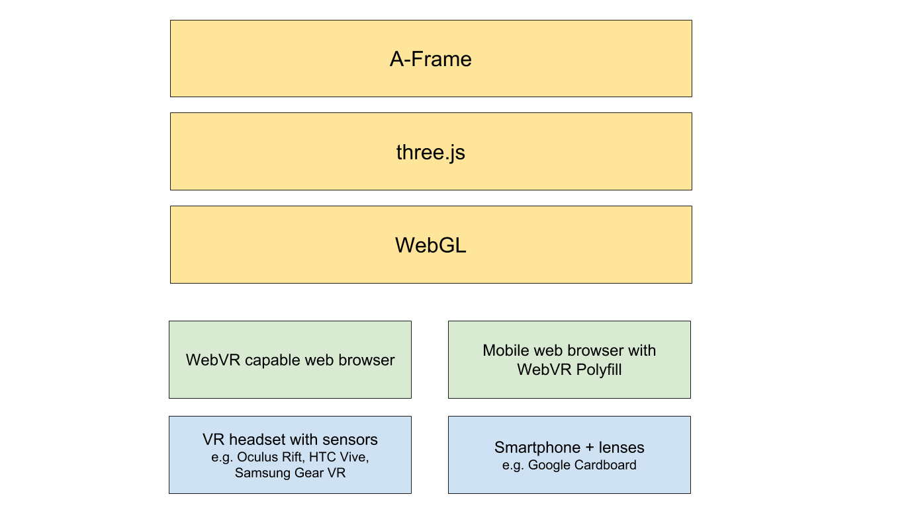

Stereoscopic

Peter O'Shaughnessy, Samsung Internet
“VR is the next major computing platform after mobile.”
Mark Zuckerberg
“I've made a lot of applications & nothing I ever created was ever going to make someone laugh, cry, recoil or scream like VR can.”
Josh Carpenter
internet://webvr-enable
// Get list of available headsets
navigator.getVRDisplays();
// Request fullscreen on headset
VRDisplay.requestPresent({ source: myCanvas })// Like normal rAF but could be 90hz or more
VRDisplay.requestAnimationFrame();
// Render what's on the source canvas
VRDisplay.submitFrame();/**
* Get eye offset & rendering dimensions to help us
* construct a stereoscopic scene for the user.
*/
VRDisplay.getEyeParameters(VREye);
/**
* Get view & projection matrices for current frame
* & VRPose with pos, orientation, accel & velocity.
*/
VRDisplay.getFrameData();var renderer = new THREE.WebGLRenderer();
renderer.setSize( width, height );
document.body.appendChild( renderer.domElement );var scene = new THREE.Scene();
var camera = new THREE.PerspectiveCamera(
45, // Field of view angle
width / height, // Aspect ratio
1, // zNear
1000 // zFar
);
camera.position.z = 100;
scene.add( camera );var cube = new THREE.Mesh(
new THREE.BoxGeometry( 50, 50, 50 ), // w, h, d
new THREE.MeshBasicMaterial( {color: 0xFF0000} );
);
scene.add( cube );function animate() {
cube.rotation.y += 0.1;
renderer.render( scene, camera );
requestAnimationFrame( animate );
}
animate();var controls = new THREE.VRControls( camera );
var effect = new THREE.VREffect( renderer );
...
controls.update();
effect.render( scene, camera );<script src="aframe.js"></script><a-scene>
<a-sphere position="0 1.25 -1" radius="1.25"
color="#EF2D5E"></a-sphere>
<a-box position="-1 0.5 1" rotation="0 45 0"
color="#4CC3D9"></a-box>
<a-cylinder position="1 0.75 1" radius="0.5"
color="#FFC65D"></a-cylinder>
<a-plane rotation="-90 0 0" width="4" height="4"
color="#7BC8A4"></a-plane>
<a-sky color="#ECECEC"></a-sky>
</a-scene><script src="aframe-layout-component.min.js"></script>
...
<a-entity id="imageContainer"
layout="type: circle; radius: 3"></a-entity><script src="aframe-look-at-component.min.js"></script>function generateImage(id, src) {
var imageEl = document.createElement('a-image');
imageEl.setAttribute('src', src);
imageEl.setAttribute('width', 1.25);
imageEl.setAttribute('height', 1);
imageEl.setAttribute('look-at', '0 0 0');
imageContainer.appendChild(imageEl);
}<a-entity camera look-controls>
<a-cursor></a-cursor>
</a-entity><a-animation begin="click"
attribute="rotation"
to="0 360 0"
dur="1000"
fill="forwards"></a-animation>Just place inside an element
new AFRAME.TWEEN.Tween(el.object3D.rotation)
.to({y: targetRotation}, self.data.duration)
.start();<a-assets id="assets">
<img id="mountainSky" src="images/sky_by_gawthrop.jpg"/>
</a-assets>
<a-sky src="#mountainSky"/>Image credits: rollercoaster photo from apol photography, cliff photo from Fotolia (purchased), standing on the universe photo by Robert Couse-Baker, VR grandma photo from Paul Rivot, earth rising photo from Michele M.F., mountain sky from Peter Gawthrop